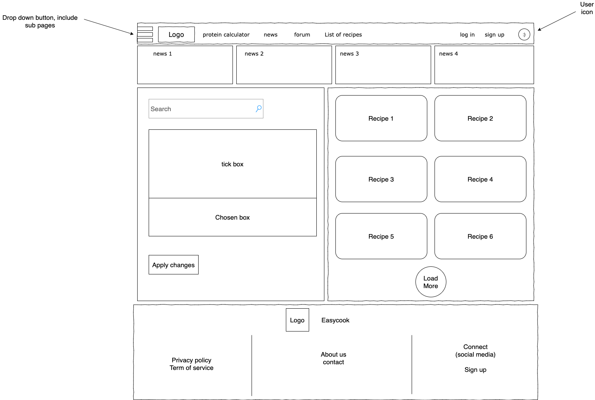
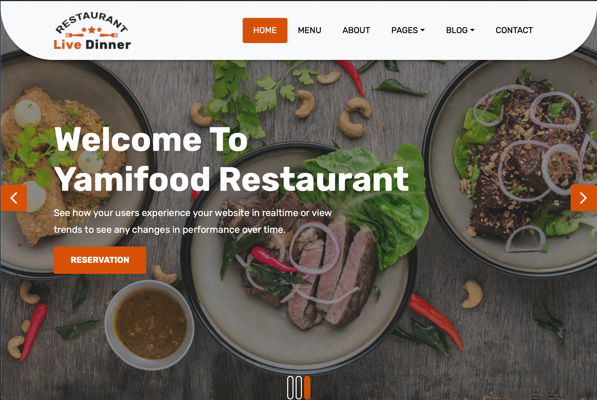
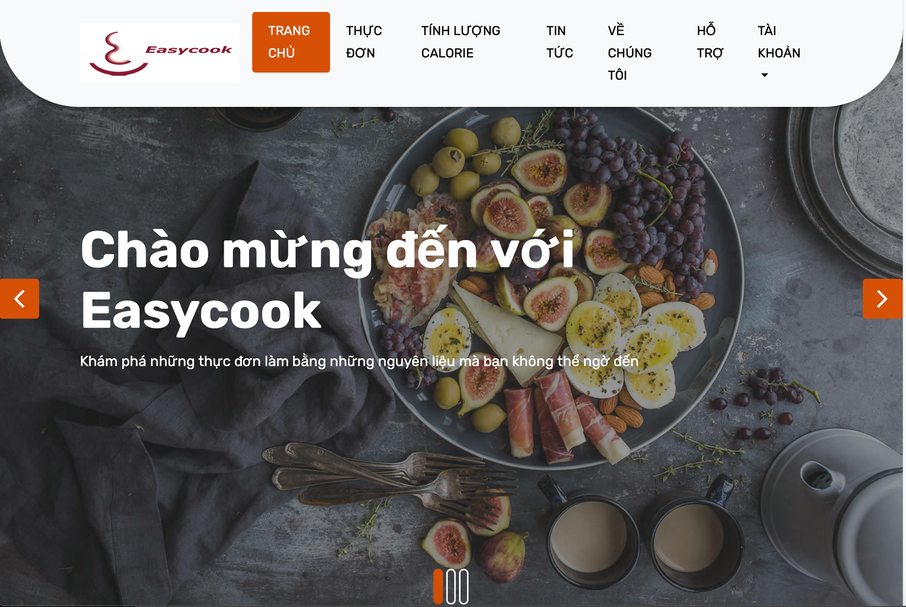

Aim: Our project( Easycook) is a website consisting of multiple functions that focus on the leftover food and support the user in order to help people save money, resources of food and simultaneously alleviate environmental problems. In daily life, we do not always finish our meal, and the leftovers will be mostly discarded. According to Wikipedia, there are about 1.3 billion tons of food, ingredients wasted every year this way, which costs roughly $1 trillion annually. This is a ridiculous amount of money that could have been used for a better cause like saving hunger around the world (and your money too). National Geographic also mentioned the fact that by wasting leftover food, we are adding a lot of problems for the environment. Thus by developing Easycook, we hope that the project can achieve our aim, for which we believe that it can have a good impact on both individuals and the world.
To achieve that aim, we have set out many goals for the development of Easycook.
First, users can use Easycook to select many cooking recipes that can be made by choosing leftover food/ingredients. Why is this feature useful? The main reason people discard leftover food is that they think those are useless. But it's not. They just don't know how to use that resource. This feature will teach them how to turn those leftovers into a brand new dish that can be used right away for the next meal. For example, you order a pizza for lunch but can't finish it, there are still 30% around? Just use Easycook, it will teach you the correct recipe to turn that pizza into another dish that can be eaten for dinner (with the help of some other ingredient of course). This feature is also the core feature of our project because it's the foundation for the aim that revolves around avoiding wasting. Thus, if we can't manage to finish the project, this feature will have the highest priority.
Second, after the user has used Easycook to get the recipes, it will offer another feature which is the ability to calculate the amount of calorie that dish will gain you. For people who are having the correct diet, whether you want to lose weight or gain weight, or maybe you are a patient with a special diet formula, this is important to have. Initially, this supposes to be a whole nutritions list like protein, fat, carbohydrate, etc but we found that it's too hard to do all of them so we settle for the only calories. However, even after reducing it to the only calories, we still have the risk of not finishing it because of the time limit. And when that happens, this feature will still have to make way for the first feature mentioned above, but it still has the second-highest priority.
Third, we will have a forum, in which users (we also have a sign-up and login function for this) can have a discussion about dishes or leftover food. They can also post useful articles that center around food-wasting, environment, fitness, etc. If the admin finds that useful, they will implement that. All and all, this is just a support feature (which is still important enough), thus it will have the lowest priority. Not to mention the implementation of login/sign up requires knowledge about PHP which is very hard for us to do.
The story behind the idea for leftovers' recipes: This idea's birth comes from one team member's observation just at the middle stage of this course's second assignment. In the first stage of Assignment 2, we had a problem with collaboration and communication skills. We realized that to solve that problem, we needed something like a bonding session to act as a bridge to help everyone in the team connect. For that reason, we decided to hang out with each other to talk about the assignment. We proceeded to have lunch at one restaurant in District 1. When we have almost finished our meal, we ask the restaurant to wrap the leftovers up to bring home because we do not want to waste those. However, one of our team members observed that not everyone in the restaurant always asks for leftovers wrapping even if there are still many remaining foods on their dishes/table. That is when the idea popped up in his mind. After that, he talked about his thinking to the whole group. That is when we wanted to research more about the food waste problem because of our curiosity. After a few articles, we found out that food waste is a serious problem that the whole world faces right now. We also found some interesting facts about the cost of the foods wasted every year. The place that the food waste problem occurs most often - the food waste problem usually occurs at households rather than a restaurant, and its negative impact on the environment. We saw a missed opportunity where there is a problem that needs to be solved. Therefore, we decided to create something that can alleviate that problem. We looked closer into the issue and acknowledged that the reason behind the most popular place that food is wasted in households is because people lack tools and methods to deal with leftovers. Finally, we think about the idea of creating a website that provides the recipes for leftovers both for the home cooks and food from delivery services. We have to admit that many websites also offer recipes for leftovers. Still, they mainly focus on Western cuisine and are written in English, which will not be convenient for Vietnamese. That is why we decided our project will primarily focus on helping our Vietnamese people first. Every content will be written in Vietnamese, and the recipes will be for common Vietnamese dishes. Everyone is really satisfied with this idea and immediately starts working after dividing the task to each member.
The story for calories calculator: The calories calculator feature's story begins when one of our team members felt that he was always tired and sleepy during his time at RMIT University. The situation severely affected his study and social life, to the extent that he could not stay focused on the lectures despite trying to. He then anxiously visited the hospital to find out that his blood pressure was higher than acceptable, and there were signs of minor hyperlipidemia (too much fat in the blood). He was traumatized and kept wondering what had led him to this state. The reality was that he, due to his study in RMIT, had to leave his family back in Hanoi and lived alone in a rented apartment in District 7. As he has always been a careless person and did not pay much attention to himself and his health in particular, he had been ordering food for all of his meals. In addition to the fact this was the first time he had the freedom of eating whatever he wished, most of the food he ordered was fast food and other "unhealthy" options, which were tasty. As a result of reckless eating, after two months, his condition worsened significantly. After visiting the local hospital, he has been cooking by himself and searching attentively for a perfect tool to calculate his food's total calories. But unfortunately, most of the usable sites/apps were for foreigners (the sites/apps only include foreign food). To correctly calculate the total calories of his meal, he had to visit three different pages, use Google translate for translation, and use metric conversion tools (convert ounce to gram, etc.). Still, the result was just barely usable. Thus he came up with the idea of a Vietnamese calorie calculator, which focuses on Vietnamese food and ingredients. We talked during one of the bonding sessions, and we all thought it was a brilliant idea.
The story for small features: After deciding the 2 main features, during the first meeting for the third assignment (week 9), we are determined to come up with additional features so that our website would be functionally complete. Some first ideas were the addition of a forum for users/moderators to post their experience and knowledge in cooking and health in general and a news section where we published accurate, useful, up-to-date news about the food waste problem in particular. Talking of forum, we then also had to consider a database for users, which resulted in account-related features such as login/sign up and account management. Furthermore, we wished to help the normal users understand the truth about this food waste problem by educating the users through profound essays and verified information. That would be our introduction feature. Some small but necessary features are credit (introducing the team behind the idea) and Q-A (popular questions about the website’s functionality and content) were also considered. Later on the final week of Assignment 2, we brainstormed some new ideas such as sharing recipes (from users to users), places for buying food recommendations, and selling ugly food (food that is edible but has less than the normally acceptable appearance). But during the whole 16 weeks, we initially decided that the sub-ideas listed above should not be implemented yet as each of those sub-ideas is more complex than the original.
The list of features:
Main features: recipes searching + list of recipes, calories calculator, news, forum
Sub-features: Login/Sign up + Account, Q-A, credit, introduction (what this project is about)
Some other problems are also discussed and solved in the meeting in week 9 such as creating a GitHub repo for the project, deciding the roles of each member, and splitting the work between the members after they knew their roles. Creating the GitHub repository and setting the workflow was simple as we just had to follow the same procedure as the assignment 2. The issues arose when we tried to determine the roles of each member. One problem was that we did not know what roles were there and how many roles we should assign. We did some research and came up with some popular roles, we then assign the roles to each member according to their interests and capabilities:
Dat: Content writer, lead UX designer, product manager
Minh: Content supervisor, UX designer, product manager
Trung: Lead developer, content writer, UX designer
Anh: content writer, developer, UX designer, tester
Content writers will write/create content for the website while UX designers will determine the frontend design for the website, including multiple aspects such as user flow, color, font, location for the texts, etc. Product managers will serve as a person to watch over the whole project, determine the problems that arise and then work with the members to come up with a solution. Content supervisors specialize in checking the content written by members and other people, they are responsible for the quality and validity of the content on the website. (lead) Developers are the ones doing the heavy work as they have to build the website with specialized tools and knowledge, they are responsible for the foundation of the project. Testers are the people that will test the product along the progress to discover bugs, design problems, or invalid content. One of the roadblocks was that we knew about the roles, but we did not have the knowledge and experience to actually fulfill the roles. We then have to assign the roles to our interest only such as Trung with the knowledge of web development would take the role of lead developer and Anh (who wishes to be a tester) to be the tester. One major problem was that Trung was the only person in the group to have the capability to create a website from scratch, others only had limited knowledge of frontend development. So Trung was responsible for the entire functionality of the website. After deciding the roles, we split the work (using google spreadsheet):
Details: https://docs.google.com/spreadsheets/d/1yc61Rf50u73piJ6Q3PwvOXTXHJG1dFPfpRapq1vKBMM/edit#gid=1155536796
That would be the end of week 9.
Week 10
Moving to the next week, after deciding the small features and dividing roles for each member in the group, we then moved to the designing stage. We again hold one more meeting to break and divide the tasks to each member. The first task is designing the basic layout for the product. We do not want our product to be just a boring website that contains a lot of words or images related to food. We want something that people can really love when browsing through our website. The first thing that users will see if they access our website is not the content but is the design of the layout and our logo. So we want to make them feel impressed so that they can stay on our website and figure everything on our website. We believe that emotion is attached closely with enthusiasm, and enthusiasm is the key to make everything you want to do become more enjoyable. Therefore, when our users are really engaged with our website, the message we want to deliver can be more inspired and touchable. Creating a professional layout also helps us to acquire more skills in terms of web development and designing a unique Logo is also an extremely important part of our product. However, the issue is that none of us have any experience in using a tool to design a layout / a logo or arrange all elements that we have and turn it into a professional layout. At first, one of our team members used pen and paper to visualize what the main page should look like and have a discussion with a via Messenger. The layout was just basically taking a little bit of the way of design from many other websites. It acted as a draft to let everyone have a basic concept to let their creativity add more things into that draft. Nevertheless, we have no experience with designing and creativity things. As a result, the layout we created was very simple and not really professional. Consequently, we hit a roadblock and made our progress become slower than we planned. In week 10, we also did some simple HTML code for our product and experienced some CSS and Javascript code.
Week 11:
After week 10, we saw that while we could create a simple website layout and other minor aspects of the overall, the aesthetics of the website was inferior to other websites. It was simply outdated, old fashioned, and amateur compared to the professional look of modern websites. So at the start of week 11, one member recommended using a template found online. The template was beautiful and fitted our project nicely. We did not think of using templates at the beginning of the project as most of the team members did not have enough knowledge of web development, so the idea did not cross our minds. After that, we asked Mr. Thanh about the possibility of using a template and he said yes. So we all decided to switch from our own design to the template. The detail of the template:
Prototype our team design at the beginning

The original template
https://www.free-css.com/free-css-templates/page252/live-dinner

Our final product

During this week, we also started working on the actual content of the website. As mentioned in week 10, every member in the team was assigned to write content for some parts of the project. The details of which parts belong to which members were written in the Google spreadsheet link above (week 9). The details of the content are listed below (for week 11, only a part of these content was created):
- First 20 recipes (10 foreign and 10 Vietnamese) as a foundation for the website core function: https://docs.google.com/document/d/1uT7G-tMTnlNiUPcZBy8DUu8vl_4YpcrqY9iqqmEQyuw/edit?usp=sharing
- Q-A, some news for the news section: check our GitHub link (Anh/new sources.txt, Anh/QnA(translated.txt))
Overall, the process of writing/translating content and adding them to the website was tedious but simple, and the more we did the research, the more fascinating this activity became. As we decided to focus mainly on the Vietnam market, foreign recipes (which were found in the English format) had to be translated back to Vietnamese. The process of translating recipes was frustrating as many keywords (ingredients, cooking techniques, utensils, metrics) are unavailable in Vietnamese or just barely acceptable when translated. The problem was so obnoxious that the guy responsible for that part had to choose which words to translate and which to keep as the original. One other dead-end in forming the recipes was which recipes we should choose for the website. Because our website focused on solving the redundant food problem, we could not use complicated recipes, which depend on various ingredients, many of which are required to be fresh/prepared. The recipes were also required to be safe for users to follow. These requirements greatly hindered the process of finding the recipes. The same problems could be said for the process of finding news articles as translating cooking-related information was tough for amateurs like us. Another problem was that we did not know how to properly form a Q-A section, partly because we did not launch the website yet, so there was no users’ feedback (which are essential for Q-A creation). Fortunately, these problems are not difficult to solve, they are time-consuming and require hard work. The content writers managed to overcome these problems. While tackling these challenges, our team bonded together more deeply thus strengthened our productivity. For week 11, we did not have a group meeting as everyone knew what were their assigned tasks.
Week 12:
In the final week (week 12), our plan for this final week is to finalize our report as well as our prototype with the highest quality. With regard to our prototype, when the design of our website is not a big problem after deciding to use a template, we mainly focus on finishing the content on our website. We also make some changes to the template to fit with our product such as removing some parts that we do not use or translating some words to make our website become more users-friendly to our target customers. After that, we hold a meeting to watch the prototype together to check whether any changes need to be made. Fortunately, the outcome met our expectation and the prototype functioned all fine. However, to make sure that there are no problems, the tester member in our team still made some tests at the end. The dead-end that we have this week is properly the time. We have a limited time to represent our prototype, so we have to test carefully everything in our prototype and discuss more about the number of the features. However, we understand that those features that we have chosen above are those really important ones and that is enough to represent to others at the moment. In the end, we feel really fulfilled with our result and have no regrets about what we can do better.
The product is now ready to represent to our investors. It has met every requirement that we wanted in the beginning. All features function excellently. If there is a team that takes over our project, there are many things that they need to do. First of all, they need to create a more professional layout of the website than the one we created, as well as the logo. The professional designers would be very perfect to have in that team. Secondly, they need to make the website more user-friendly by looking at the smallest details and upgrading those. They also have to deal with the back-end part, where we cannot due to our time-limit and our experience/knowledge at this course. Thirdly, the content in our website needs to be more diverse and every information on the website needs to be verified by professional ones. After finishing everything above, if time is available, they can develop more features about logistics/delivery to help minimize the food-waste problem.
Dat: Content writer, lead UX designer, product manager
Minh: Content supervisor, UX designer, product manager, developer
Trung: Lead developer, content writer, UX designer
Anh: Content writer, developer, UX designer, tester
Content writer: everyone has this role because everyone has to write for this assignment, however, people who write a lot will have less job else where (and vice versa).
Product manager: Dat and Minh have this role because they are the one who assign task to people (within the role of course)
UX designer: everyone have this role for the similar reason as content writer. Dat, however have the "lead" title because he did most of the initial design and have higher priority if everyone have the same opinion.
Developer: Anh and Minh help with the initial html page, after that, Trung did the rest.
Content supervisor: Minh often scan through the content and tell people if he notice anything wrong.
Tester: Anh will handle the testing of both the website and product to see if anything wrong (like broken link or missfunction)